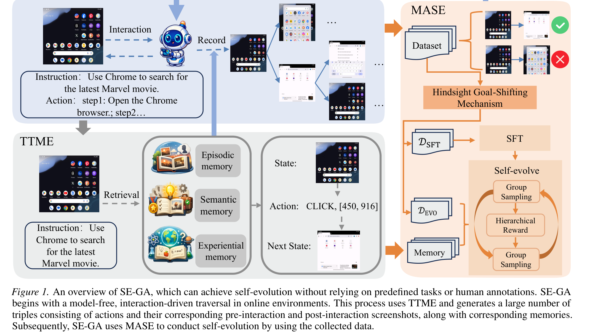
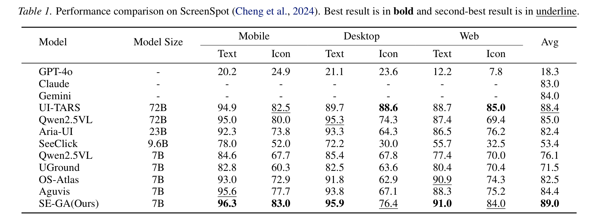
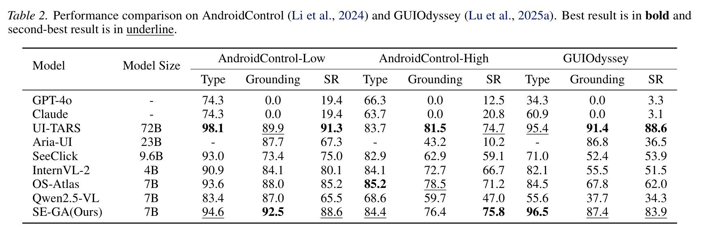
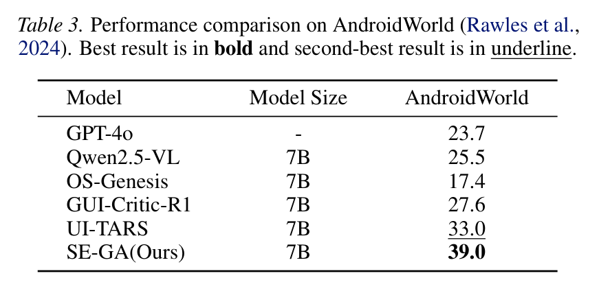
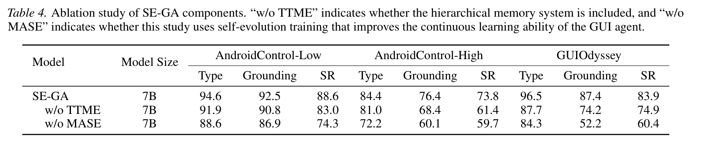

Autonomous Graphical User Interface (GUI) agents often struggle with multi-step tasks due to constrained context windows and static policies that fail to adapt to dynamic environments. To address these limitations, this work proposes the Self-Evolving GUI Agent (SE-GA), a novel framework that integrates hierarchical memory structures with an iterative self-improvement mechanism.
At the core of our approach is Test-Time Memory Extension (TTME), which facilitates long-term planning by dynamically retrieving episodic, semantic, and experiential memories to provide salient contexts during inference. To ensure continuous learning, we introduce Memory-Augmented Self-Evolution (MASE), which is a training pipeline that adopts the data collected by TTME to stabilize and enhance the agent's foundational policy.
Extensive evaluations across both offline and online benchmarks demonstrate SE-GA achieves state-of-the-art performance, reaching success rates of 89.0% on ScreenSpot and 75.8% on the challenging AndroidControl-High dataset. Furthermore, significant improvements on the AndroidWorld benchmark highlight the superior generalization to dynamic environments.

SE-GA systematically organizes and exploits historical interaction data through a unified hierarchical memory to improve multi-step task execution reliability.
Integrates episodic, semantic, and experiential memories, enabling the agent to retrieve both recent interaction context and relevant past experiences in a unified manner.
A two-stage training pipeline combining grounding supervision with self-collected experience, featuring Hindsight Goal-Shifting for data construction and stabilized training for iterative improvement.
Consistently improves success rates and robustness across multiple benchmarks, achieving 89.0% on ScreenSpot, 75.8% on AndroidControl-High, and 39.0% on AndroidWorld.
TTME maintains a hierarchical memory repository M = (MEPI, MSEM, MEXP) during task execution, inspired by human cognitive architectures:
Beyond static retrieval, TTME functions as a dynamic buffer that accumulates novel successful trajectories in real-time during inference, enabling the agent to achieve online evolution without immediate retraining.
MASE provides a two-stage training framework that leverages the high-quality interaction data curated within the memory repository:
Supervised fine-tuning (SFT) to strengthen the model's reasoning capabilities, formulated as memory-aware behavior cloning over expert trajectories. This bridges the gap between visual perception and executable action space.
Based on GRPO with three key innovations: token-level importance ratio for fine-grained credit assignment, adaptive clipping with cosine decay schedule, and hierarchical reward design combining format correctness and task execution accuracy.
A key innovation is the Hindsight Goal-Shifting Mechanism: when a trajectory fails to achieve its original goal but successfully completes a valid sub-goal, it is relabeled as a successful instance, effectively converting failures into useful supervision signals.

Grounding accuracy on ScreenSpot. SE-GA achieves an average score of 89.0%, consistently outperforming all 7B baselines and surpassing larger models such as UI-TARS-72B and Qwen2.5-VL-72B.

Performance comparison on AndroidControl and GUIOdyssey. SE-GA achieves 75.8% success rate on AndroidControl-High and 83.9% on GUIOdyssey, establishing a new state-of-the-art among 7B models.

Performance on AndroidWorld. SE-GA achieves 39.0%, significantly outperforming prior open-source models (UI-TARS-7B: 33.0%, Qwen2.5-VL-7B: 25.5%) and even closed-source GPT-4o (23.7%).

Ablation study on core components. Removing TTME causes significant performance drops across all benchmarks, and removing MASE results in even larger degradation, demonstrating the critical roles of both hierarchical memory retrieval and self-evolution training.
@misc{jin2026segamemoryaugmentedselfevolutiongui,
title={SE-GA: Memory-Augmented Self-Evolution for GUI Agents},
author={Shilong Jin and Lanjun Wang and Zhuosheng Zhang},
year={2026},
eprint={2605.16883},
archivePrefix={arXiv},
primaryClass={cs.LG},
url={https://arxiv.org/abs/2605.16883},
}